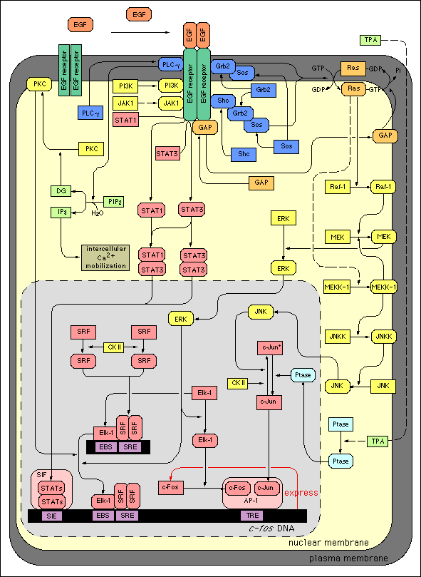

Lecture 30 Nov 2001, Per Kraulis
The protein Ras p21 (also called cH-ras p21) was discovered in the early 1980's as an oncogene, i.e. a gene that was mutated in many tumours, and which presumably must be involved in making cells become cancerous, or keeping them in a cancerous state. An immense amount of research has gone into characterization of these oncogenes, and one large group of them have turned out to be genes that participate in the regulation of cell growth and division.
In the beginning of the 1990's, the growth regulation pathway which Ras p21 is a central part of was unravelled. It turns out that Ras p21 is part of a signalling cascade that also contains the proteins Shc, Grb2, SOS, GAP, Raf-1, MEK, ERK, and others. The purpose of the cascade is to transduce a signal from a growth-factor receptor in the cell membrane (there are several different ones) to the transcriptional regulation of genes in the nucleus that control cellular growth and division.
In the image below (from the SPAD database), the receptor is the EGF receptor, which is a kinase that autophosphorylates itself upon binding of the EGF hormone. The Grb2 protein then binds the phosphorylated EGF receptor. This complex binds to SOS, which is activated to perform nucleotide exchange of Ras p21, so that it binds GTP instead of GDP, thus being activated. Raf-1 binds to the activated Ras p21, and becomes an active kinase which turns on a phosphorylation cascade involving MEK and MEKK-1. One of the mechanisms that turns off the signal is the GAP protein that can bind the GTP form of Ras p21, and makes it hydrolyze its GTP into GDP, thus becoming inactive again.
One way that this regulatory network can break down is if one of the switches becomes stuck in the 'on' position. This is what happens when certain important mutations of the Ras p21 gene occur. In a few Ras p21 mutants, the protein becomes unable to hydrolyze GTP, and so will always be in the active state.
The Ras p21 network is strongly conserved among species. It can be found in the fruit fly, nematode, yeast, and mammals, and the component proteins share significant sequence similarities, and have the same molecular functions in the pathway. However, the exact process that employs the pathway varies considerably. In fact, this is also the case within one organism. The Ras p21 pathway can be involved in different processes in different cell types, and may also give different results depending on the nature of the original signal. This means that the Ras p21 pathway is to a certain extent non-specific: it usually implies cellular growth, but the exact nature of that cellular growth is dependent on other factors.
